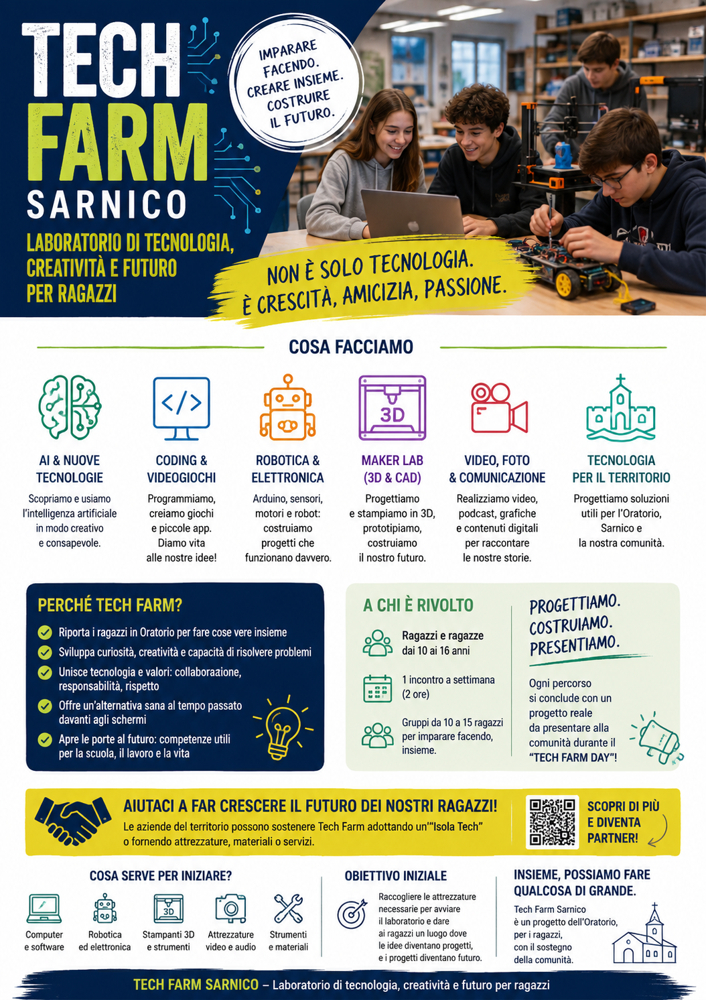
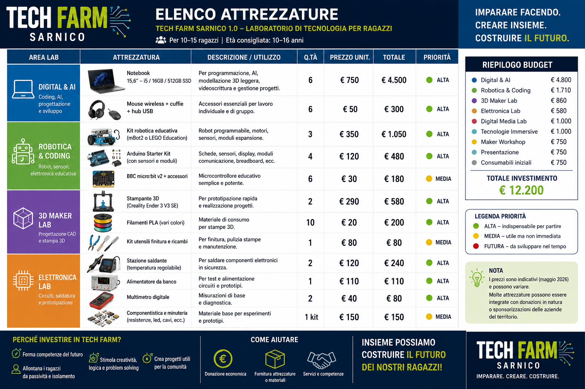

Digital & AI
Notebook, software, coding, AI e progettazione.
ORATORIO DI SARNICO
Laboratorio di tecnologia, creatività e futuro per ragazzi
Scopri le attrezzatureTech Farm Sarnico è un progetto educativo pensato per avvicinare ragazze e ragazzi alla tecnologia attraverso esperienze concrete: coding, intelligenza artificiale, robotica, elettronica, stampa 3D, video e progettazione digitale.
L'obiettivo è creare uno spazio vivo, collaborativo e accessibile, dove la tecnologia diventa uno strumento per sviluppare curiosità, autonomia, creatività e capacità di risolvere problemi.

PIANO DI AVVIO

Notebook, software, coding, AI e progettazione.
Kit robotici, Arduino, micro:bit, sensori e motori.
Stampanti 3D, filamenti, CAD e prototipazione.
Saldatura, multimetri, alimentatori e componentistica.
Video, audio, fotografia e comunicazione digitale.
Tecnologie immersive, sperimentazione e nuovi strumenti.
PARTNER DEL TERRITORIO
Aziende, professionisti e sostenitori possono contribuire con una donazione economica, fornendo attrezzature o materiali, oppure mettendo a disposizione competenze e servizi.